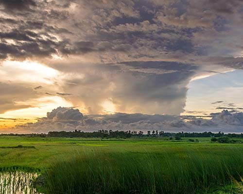
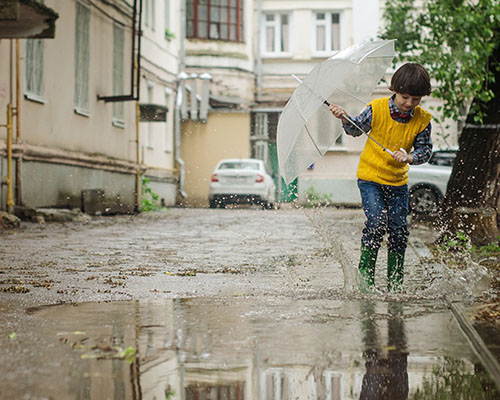
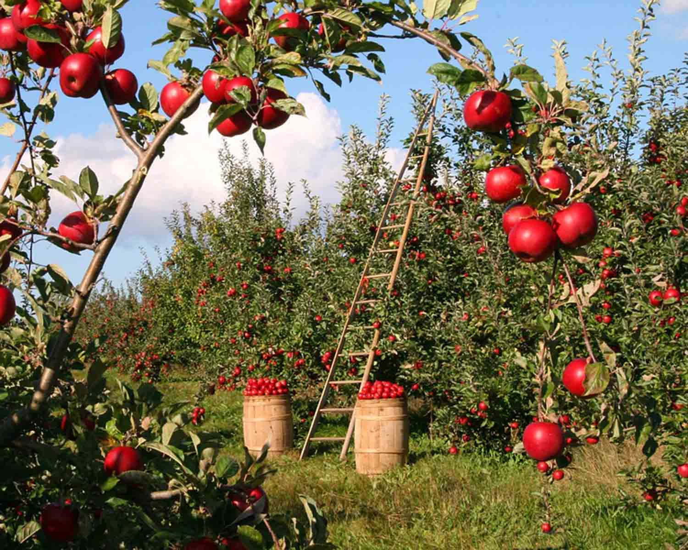
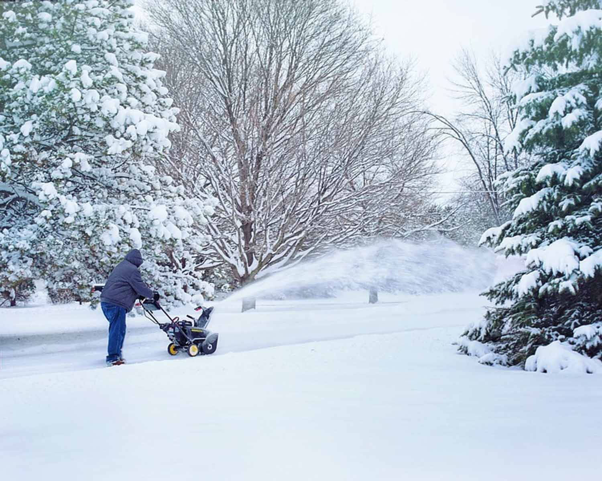

Spring breezes are sure to help Mother Nature along.

Local farmers are grateful for much needed rain.

Spring rains are perfect for puddle jumping!High winds amidst drought are cause for concern among Greenville residents.

It's a sunny day at Franklin Farms and the apples are ready to harvest!

Here, a resident of Springfield clears the sidewalk after a winter snowstorm.